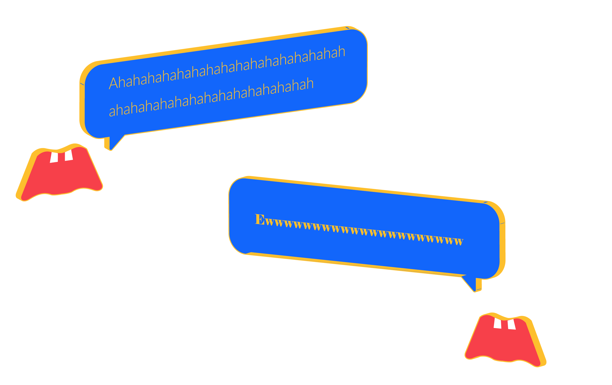
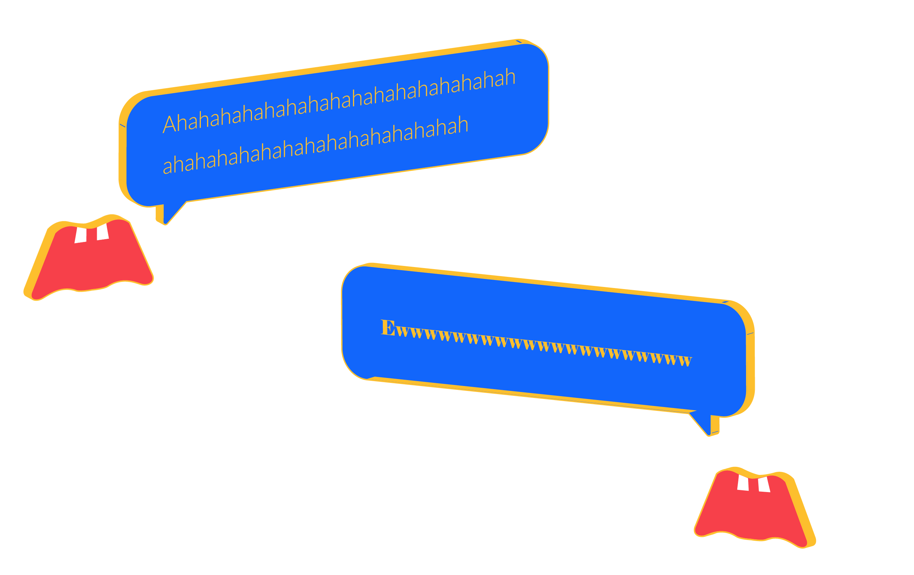

Whenever someone says something that a predecessor has never said, write a paragraph that has never been written by others. In our world, there will be a set of letters combined into a phrase, lined up.
In our world, the greatest words always occupy the most dazzling position. The letters that make up their luck are admired by all our letters, they have the most beautiful body and the strongest strength, they represent the strongest vitality of the text. The more deeply remembered the words, the stronger and longer the life. They have lived for thousands of years and become our idols.
In my world, the doctrines of various religions have flown in the sky, they attacked each other, the sound of suicide bombings and the murder of spears and shields came one after another. The lingering poems are in the towers, in the mountains, and in the sea, accepting the eyes of love. The classic theorem such as E=MC2 will always polish itself and accept the worship of the people far and near.
Most of the sentences are just ordinary spoken words. They have no value. They are just said to be spoken, and then they use some communication or deception. Then they are slowly forgotten. The letters that makeup them are the same. Everything that makes up a sentence, spends a lifetime, then dies, and the sentence disappears.
Sometimes when I form a word, if someone screams "Ahahahahahahah," it means a group of A. who is going to suffer.
 
